Built: Ask the library.
The real app (branch app-v2), debug build with a sample library seeded for screenshots. The panels that say a model or microphone access is missing are real: the screenshot build has neither.
Screens
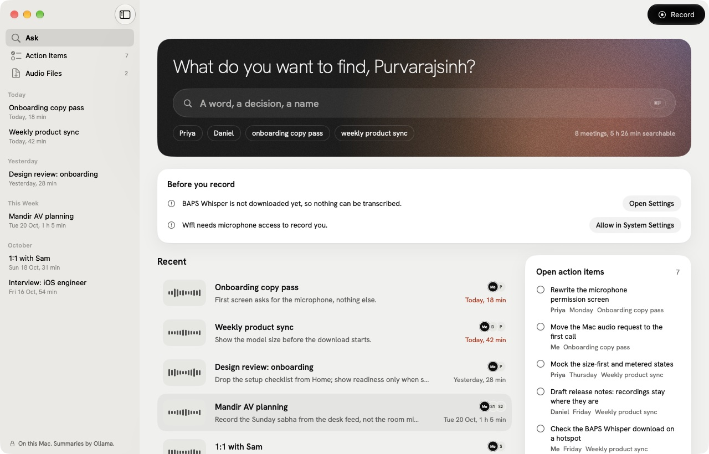
Ask
Search every word; suggestions come from your own library; open action items beside it.
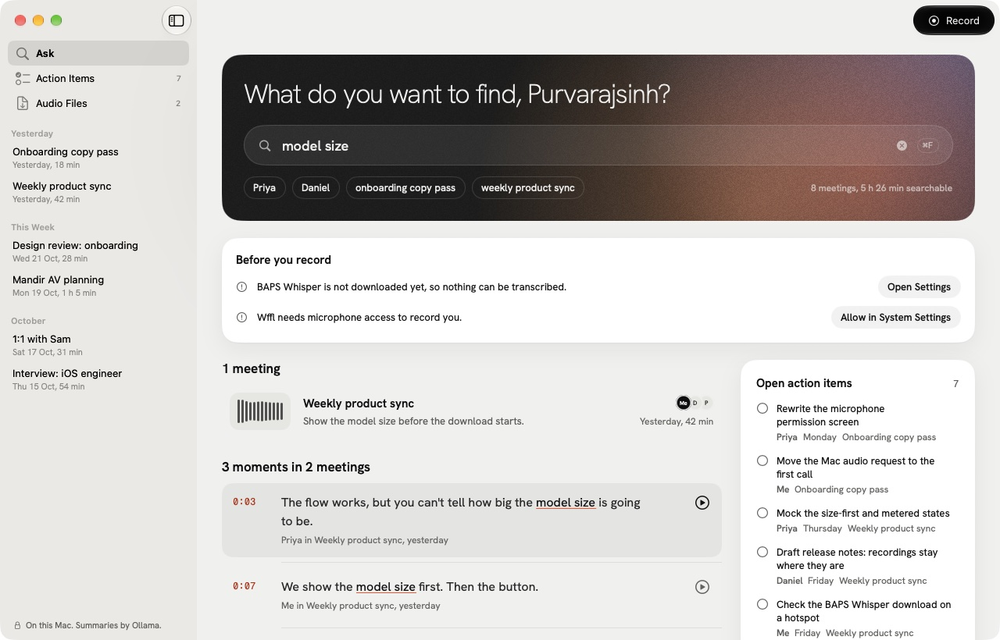
Search
Each hit underlines the match in ember and opens the transcript at that line, with the recording cued.
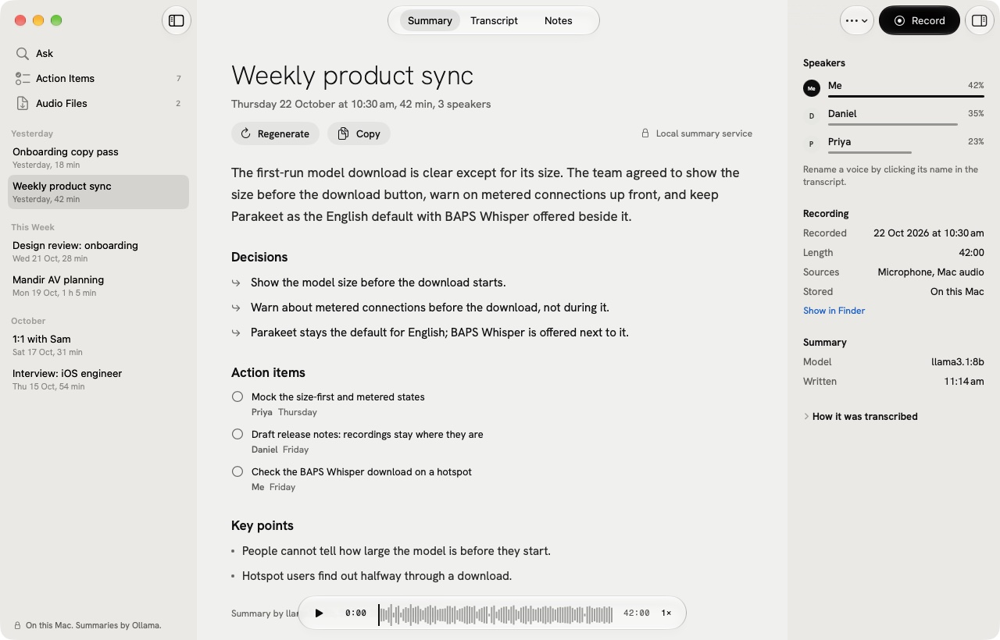
Meeting
Summary taken apart into decisions and tickable action items; speakers and recording facts in the inspector; real playback.
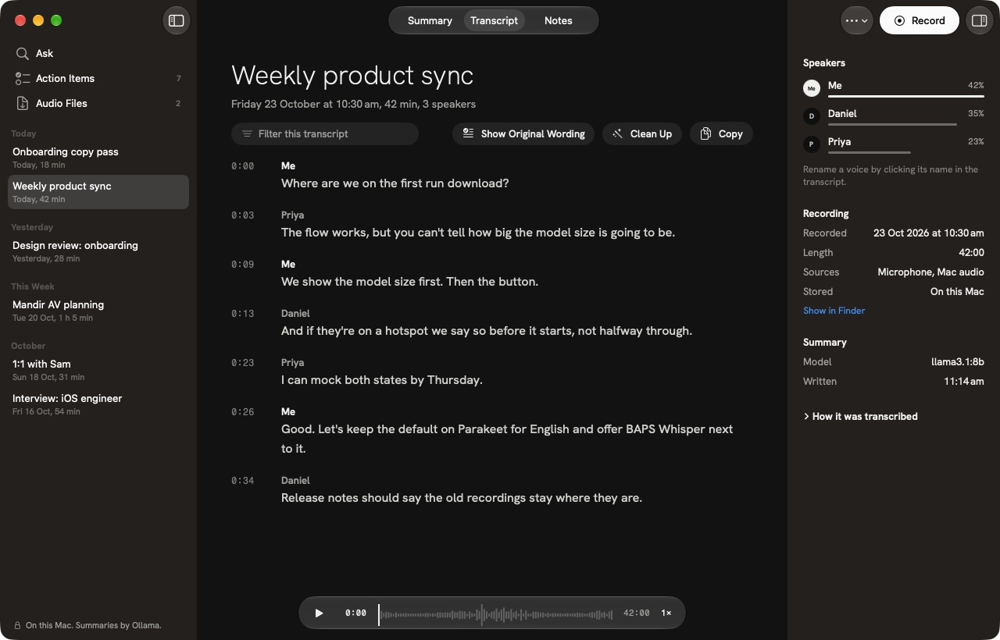
Transcript
Click a timecode to play from there; rename a voice by clicking its name.
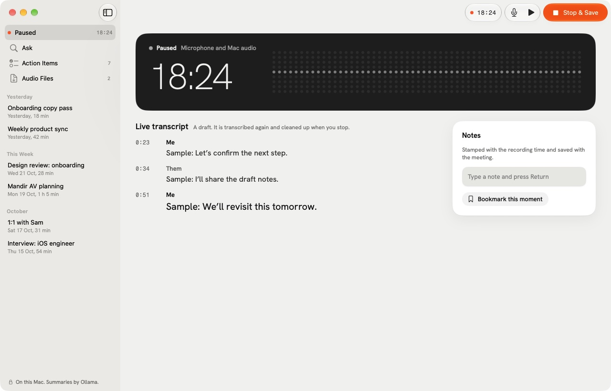
Recording
Stays in the window; notes are stamped with the recording time.
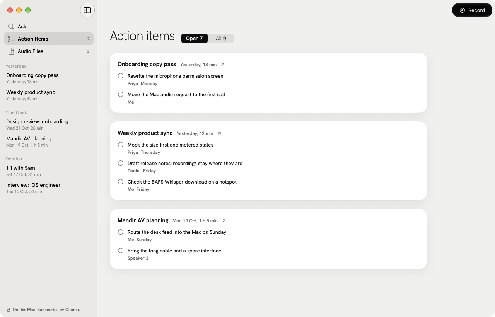
Action Items
Every task from every summary, grouped by meeting.
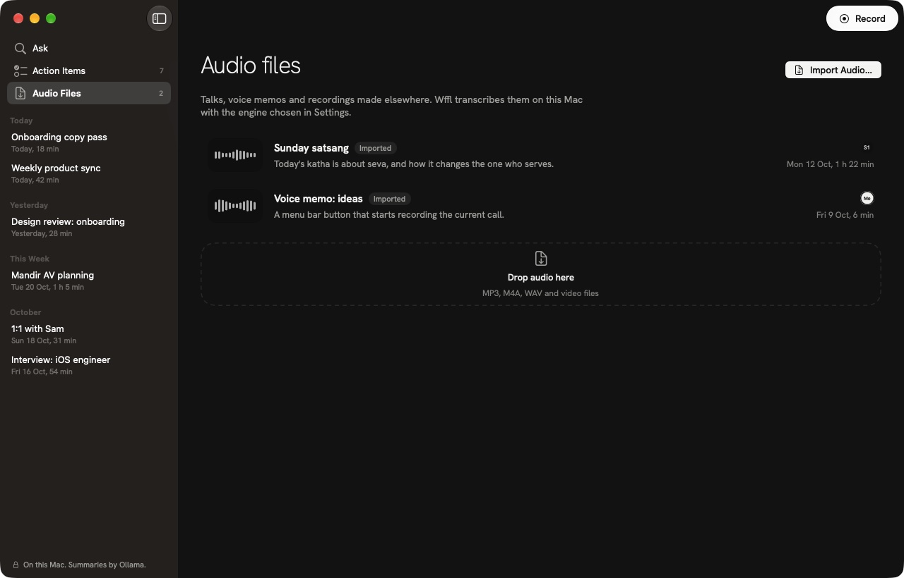
Audio Files
Imported talks and memos, drop to transcribe.
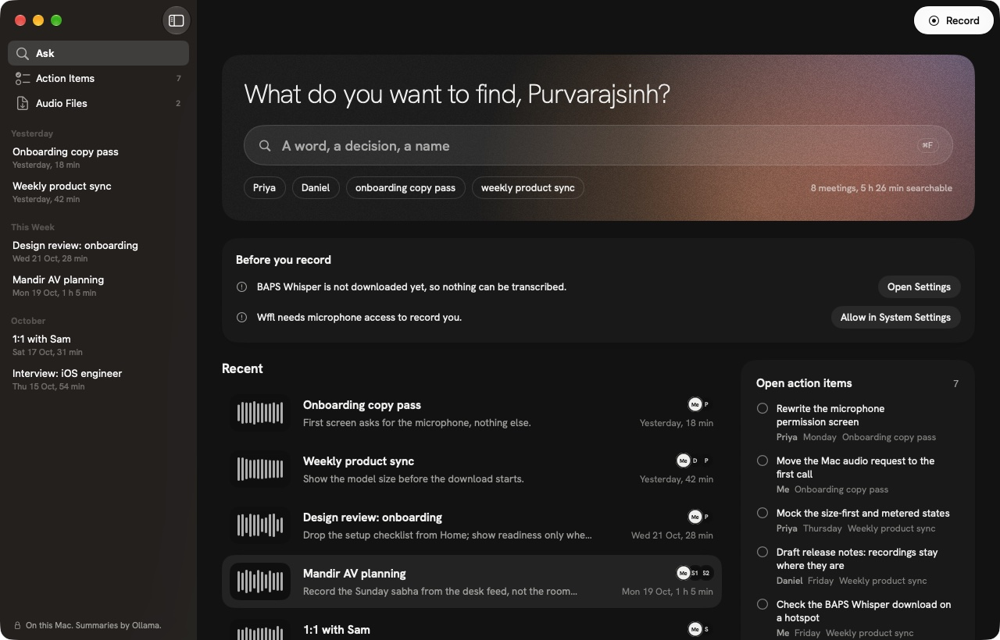
Ask, dark
The three structures you chose from
Real SwiftUI on macOS 27, sample data. Same type, palette and instruments as the website; each organises Home differently. The meeting, transcript and recording screens are shared and shown below. Lock one on the decision page, or tell Claude which.
Shared screens
Whichever structure you pick, a meeting opens as a document with an inspector, and recording turns the window into the instrument.
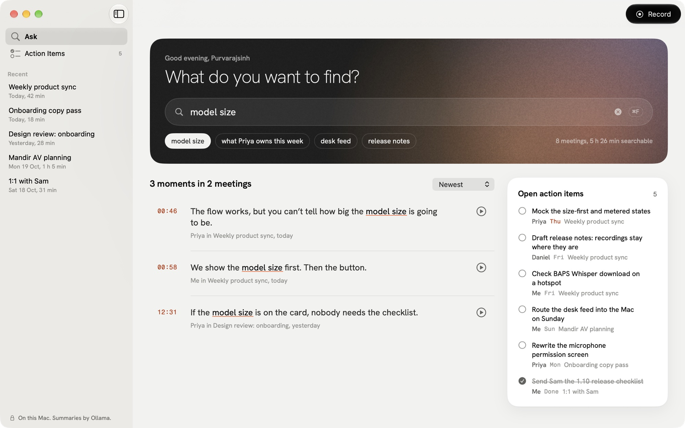
Search (Ask)
Matches underlined in ember, each with its timecode.
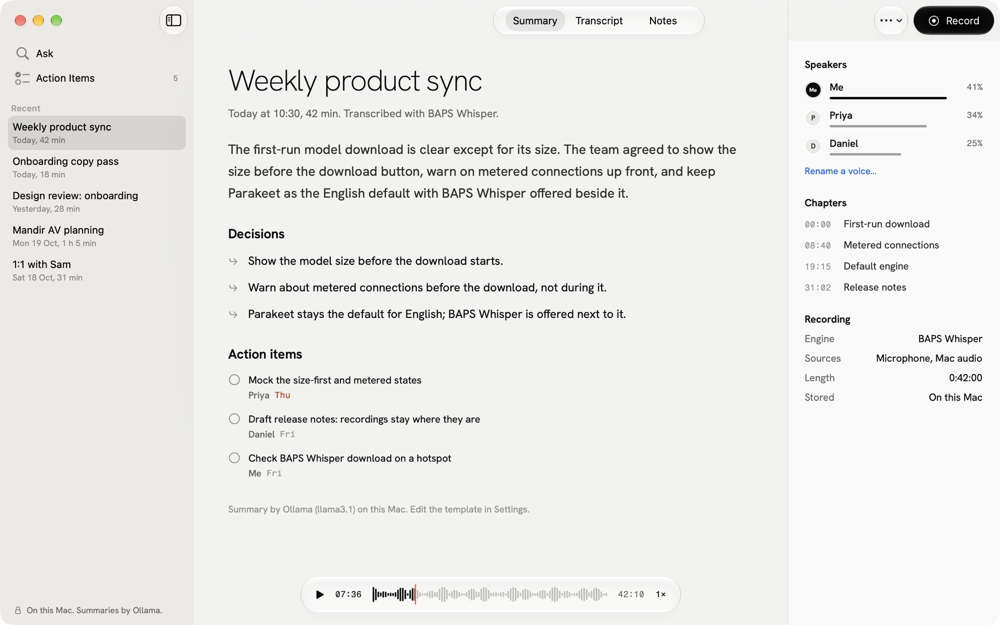
Meeting summary
Decisions and action items, speakers and chapters in the inspector.
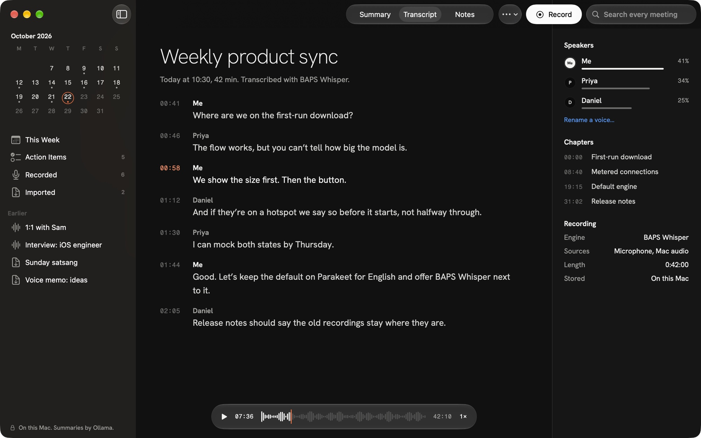
Transcript, dark
The current line marked by its ember timecode.
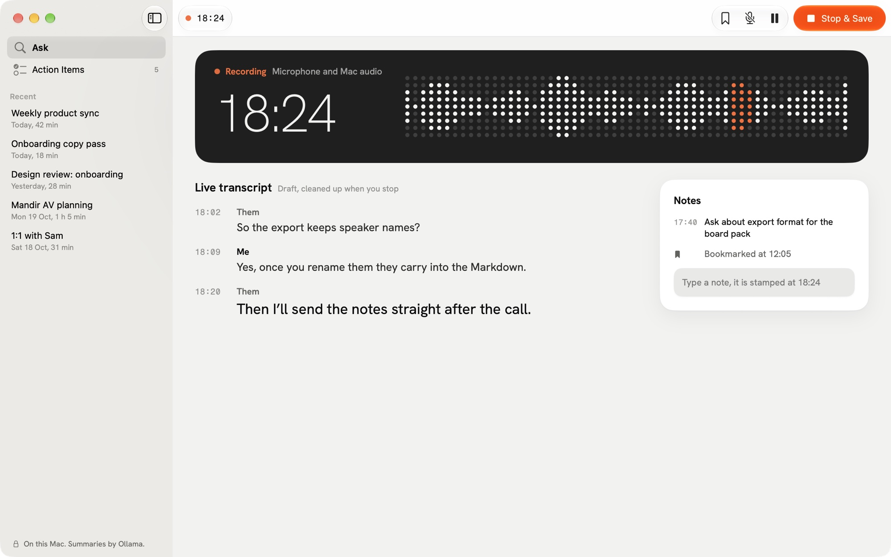
Recording
Ink instrument, live transcript, timestamped notes.
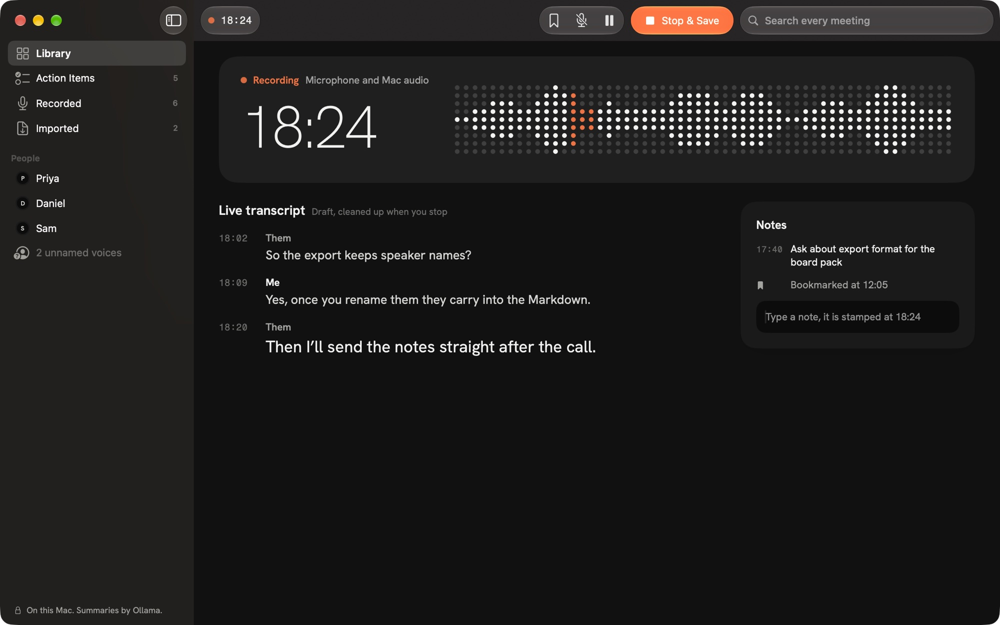